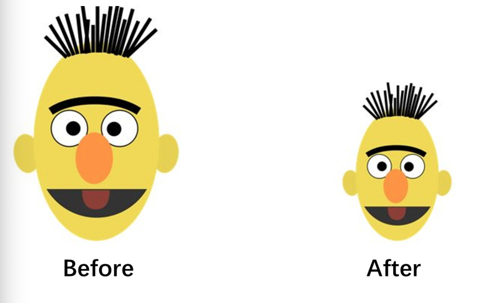
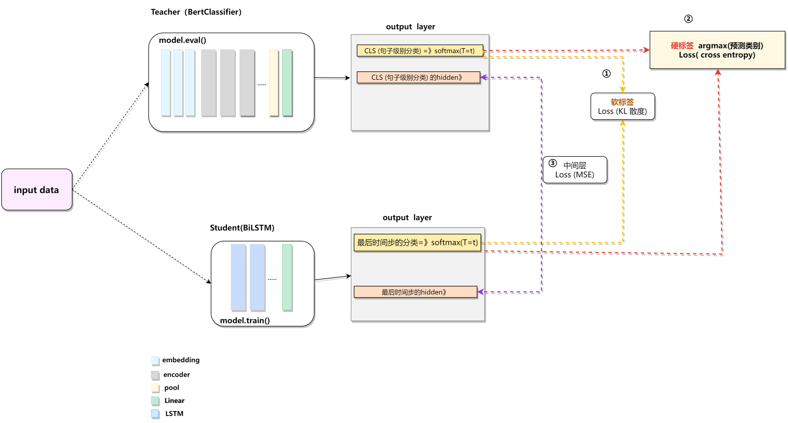
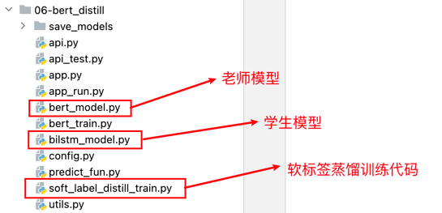

4.3 知识蒸馏¶
学习目标
- 理解什么是模型的知识蒸馏.

1.什么是模型蒸馏¶
在工业级的应用中, 除了要求模型要有好的预测效果之外, 往往还希望它的"消耗"足够小. 也就是说一般希望部署在线上的应用模型消耗较小的资源. 这些资源包括存储空间, 包括算力.
在深度学习背景下, 如果希望模型的效果足够好, 通常会有两种方案:
- 使用更大规模的参数.
- 使用集成模型, 将多个弱模型集成起来.
注意: 上面两种方案往往需要较大的计算资源, 对部署非常不利. 由此产生了模型压缩的动机: 我们希望有一个小模型, 但又能达到大模型一样或相当的效果.
模型蒸馏是一种通过将一个复杂模型（教师模型）的知识转移给一个简单模型（学生模型）的方法，以提高学生模型的性能。在减小模型体积的同时，保持或提升模型性能。
- 知识蒸馏的概念最早由Hinton在2015年提出, 在2019年后火热起来.
- 知识蒸馏在目前已经成为一种既前沿又常用的提高模型泛化能力和部署优势的方法.
2.知识蒸馏基础概念必知必会¶
知识蒸馏的核心是有两个模型，一个教师模型，一个是学生模型。
2.1 教师模型¶
- 定义： 复杂的、高性能的模型，通常是大型深度神经网络，且是已经训练好的模型。
- 特点： 参数量大，能够学习复杂的特征和关系。
2.2 学生模型¶
- 定义： 简化的、小型的模型，还未进行训练的模型。
- 特点： 参数量较小，适用于资源受限的场景。
2.3 硬标签¶
硬标签是指传统监督学习中使用的确定性分类标签，通常是一个 one-hot 向量，表示样本属于哪个类别。
三分类问题中，标签为类别2 → [0, 1, 0]
2.4 软标签¶
软标签是指教师模型输出的概率分布，表示其对每个类别的预测信心。是知识蒸馏中的关键。
三分类问题中，经过softmax之后得到 → [0.2, 0.7, 0.1]
2.5 中间层¶
中间层指的是神经网络中非最终输出的隐藏层表示，通常是特征图或向量。
3.知识蒸馏架构¶
目前主要三种蒸馏方式：
① 硬标签蒸馏
学生模型直接学习教师模型硬标签，即教师模型预测的具体类别作为学生的label。
损失函数：交叉熵损失
②软标签蒸馏
学生模型学习真实的标签和教师模型软标签，将两种losss进行相加来更新学生模型的参数。
③中间层蒸馏
教师模型中间层的特征表达方式，让学生具备更相似的“思考过程”

关于KL散度损失
关于软标签蒸馏超参数α和T
软标签超参数包括：权重系数α 和 温度T
4.代码实现¶
代码位置：
TMFCode\06-model-compression\bert_distll

4.1 config配置文件实现¶
代码位置：
TMFCode\06-model-compression\bert_distll\config.py
以下是config配置文件：
class Config(object):
def __init__(self):
"""
配置类，包含模型和训练所需的各种参数。
"""
self.model_name = "bert" # 模型名称
# 路径
self.root_path = '/Users/duyi/duyi7/HeiMa/我的课程/投满分项目/投满分项目-我的备课/03-code/TouManFenClassifier/'
# 原始数据路径
self.train_datapath = self.root_path + '01-data/train.txt'
self.test_datapath = self.root_path + '01-data/test.txt'
self.dev_datapath = self.root_path + '01-data/dev.txt'
# 类别文档
self.class_path = self.root_path + "01-data/class.txt"
self.class_list = [line.strip() for line in open(self.class_path, encoding="utf-8")] # 类别名单
# 模型训练保存路径
self.model_save_path = self.root_path + "06-bert_distill/save_models/bert_classifer_model.pt" # 模型训练结果保存路径
# 模型训练+预测的时候
self.device = torch.device("cuda" if torch.cuda.is_available() else "cpu") # 训练设备，如果GPU可用，则为cuda，否则为cpu
self.num_classes = len(self.class_list) # 类别数
self.num_epochs = 2 # epoch数
self.batch_size = 64 # mini-batch大小
self.pad_size = 32 # 每句话处理成的长度(短填长切)
self.learning_rate = 5e-5 # 学习率
self.bert_path = self.root_path + "/04-bert/bert-base-chinese" # 预训练BERT模型的路径
self.bert_model = BertModel.from_pretrained(self.bert_path) # 加载预训练BERT模型
self.tokenizer = BertTokenizer.from_pretrained(self.bert_path) # BERT模型的分词器
self.bert_config = BertConfig.from_pretrained(self.bert_path) # BERT模型的配置
# bert模型蒸馏-biLSTM模型参数配置
self.embed_size = 128
self.hidden_size_lstm = 256
self.num_layers = 3
self.bilstm_save_model_path = self.root_path + "06-bert_distill/save_models/bilstm_classifer_model.pt"
self.dropout = 0.3
if __name__ == '__main__':
conf = Config()
4.2 教师模型¶
代码位置：
TMFCode\06-model-compression\bert_distll\bert_classifer_model.py
基于本之前的bert_classifer_model一致，只是调整forward返回值部分，增加pool层输出：
import torch
import torch.nn as nn
from transformers import BertModel
from config import Config
config = Config()
class BertClassifier(nn.Module):
def __init__(self):
super(BertClassifier, self).__init__()
self.bert = BertModel.from_pretrained(config.bert_path)
self.fc = nn.Linear(config.bert_config.hidden_size, config.num_classes)
def forward(self, input_ids, attention_mask):
outputs = self.bert(
input_ids=input_ids,
attention_mask=attention_mask
)
logits = self.fc(outputs[1])
# 进行softmax
return logits
# 测试以上模型
if __name__ == '__main__':
model = BertClassifier()
input_ids = torch.tensor([[1, 2, 3, 4, 5, 6, 7, 8, 9, 10], [1, 2, 22, 33, 44, 55, 66, 77, 88, 99]],
dtype=torch.long)
attention_mask = torch.tensor([[1, 1, 1, 1, 1, 1, 1, 1, 0, 0], [1, 1, 1, 1, 1, 1, 1, 0, 1, 1]], dtype=torch.long)
logits = model(input_ids, attention_mask)
print(logits)
4.3 学生模型¶
代码位置：
TMFCode\06-model-compression\bert_distll\bert_classifer_model.py
构建BiLSTM的学生模型
import torch
import torch.nn as nn
from config import Config
conf = Config()
class BiLSTMModel(nn.Module):
def __init__(self):
super(BiLSTMModel, self).__init__()
# 定义embedding
self.embedding = nn.Embedding(conf.bert_config.vocab_size, conf.embed_size)
# 定义lstm
self.lstm = nn.LSTM(conf.embed_size, conf.hidden_size_lstm, conf.num_layers, bidirectional=True,
batch_first=True)
# 定义dropout
self.dropout = nn.Dropout(conf.dropout)
# 定义全连接层
self.fc = nn.Linear(conf.hidden_size_lstm * 2, conf.num_classes)
def forward(self, input_ids, attention_mask):
"""
:param input_ids: 维度：[batch_size, seq_len]
:param attention_mask: 维度：[batch_size, seq_len]
:return:
"""
# 2、Embedding 层，获取ebedding词向量
# [batch_size, seq_len, embed_size]
embed = self.embedding(input_ids)
# 3、经过valid mask输出对应有效字符的embedding
# 创建掩码，过滤 [CLS] (101) 和 [SEP] (102)
cls_token_id = 101 # 动态获取 token ID
sep_token_id = 102
cls_sep_mask = (input_ids != cls_token_id) & (input_ids != sep_token_id)
# [batch_size, seq_len]
valid_mask = attention_mask & cls_sep_mask
# [batch_size, seq_len, 1]
valid_mask_embed = valid_mask.unsqueeze(-1)
# 无效 token 的嵌入置为 0
embed = embed * valid_mask_embed
# 4、经过BiLSTM 层 前向传播
# [batch_size, seq_len, hidden_size*2]
lstm_out, _ = self.lstm(embed)
# 5、平均池化，对整个句子有效字符进行平均池化
# [batch_size, seq_len, 1]
valid_mask_out = valid_mask.unsqueeze(-1)
# [batch_size, seq_len, hidden_size*2]
valid_lstm_out = lstm_out * valid_mask_out
# 求和
# [batch_size, hidden_size*2]
sum_hidden = valid_lstm_out.sum(dim=1)
# 有效 token 的数量，避免除以 0（加上一个极小值）
# [batch_size, 1]
valid_token_count = valid_mask_out.sum(dim=1) + 1e-8
# 平均池化
# [batch_size, hidden_size*2]
hidden = sum_hidden / valid_token_count
# 5、Dropout 和全连接层
hidden = self.dropout(hidden)
# [batch_size, num_classes]
logits = self.fc(hidden)
return logits
# 进行模型测试
if __name__ == '__main__':
# 编写测试数据
input_ids = torch.LongTensor([[101, 2, 3, 4, 5], [4, 102, 6, 7, 8]])
attention_mask = torch.LongTensor([[1, 1, 1, 1, 0], [1, 1, 0, 0, 0]])
model = BiLSTMModel()
model(input_ids, attention_mask)
4.5 软标签蒸馏¶
代码位置：
TMFCode\06-model-compression\bert_distll\soft_label_distill_train.py
导包以及相关配置文件：
# 软标签蒸馏
import torch
import torch.nn as nn
import torch.nn.functional as F
from torch.optim import AdamW
from sklearn.metrics import classification_report, f1_score, accuracy_score, precision_score, recall_score
from tqdm import tqdm
from config import Config
from utils import build_dataloader
from bert_classifer_model import BertClassifier
from bilstm_classifer_model import BiLSTMModel
import warnings
warnings.filterwarnings("ignore") # 忽略警告信息
conf = Config() # 加载配置文件
以下是训练代码逻辑，核心区别仅仅是在loss计算上：
# 软标签蒸馏
import torch
import torch.nn as nn
import torch.nn.functional as F
from torch.optim import AdamW
from sklearn.metrics import classification_report, f1_score, accuracy_score, precision_score, recall_score
from tqdm import tqdm
from config import Config
from utils import build_dataloader
from bert_classifer_model import BertClassifier
from bilstm_classifer_model import BiLSTMModel
import warnings
warnings.filterwarnings("ignore") # 忽略警告信息
conf = Config() # 加载配置文件
def model2train():
# 1.加载训练，验证，测试的数据
train_dataloader, dev_dataloader, test_dataloader = build_dataloader()
# 2.定义教师模型Bert
teacher_model = BertClassifier()
# 2.1 加载模型参数
state_dict = torch.load(conf.model_save_path)
# 2.3 加载模型参数到模型中
teacher_model.load_state_dict(state_dict)
# 2.4 将模型移动到指定设备（GPU 或 CPU）
teacher_model.to(conf.device)
# 3.定义学生模型
student_model = BiLSTMModel()
student_model.to(conf.device)
# 4. 定义模型蒸馏的参数包括 权重系数alpha，温度参数T
# 4.1 蒸馏参数： 温度参数T
T = 2.0
# 4.2 蒸馏参数：软标签权重
alpha = 0.7
# 5.初始化优化器和损失函数
optimizer = AdamW(student_model.parameters(), lr=conf.learning_rate)
criterion = nn.CrossEntropyLoss()
# 6.最佳F1值
best_f1 = 0.0
# 7.遍历每个 epoch
for epoch in range(conf.num_epochs):
# 7. 1 设置学生模型为训练模式，设置教师模型为评估模式（不更新权重）
student_model.train()
teacher_model.eval()
# 7. 2 设置累计损失，初始化预测和真实标签
total_loss = 0.0
pred_label_list = []
true_label_list = []
# 8. 遍历训练数据批次
for i, batch in enumerate(tqdm(train_dataloader, desc="Training on train set")):
# 8.1 input_ids, attention_mask, label放到设备
input_ids, attention_mask, labels = batch
input_ids = input_ids.to(conf.device)
attention_mask = attention_mask.to(conf.device)
labels = labels.to(conf.device)
# 8.2 清空优化器梯度
optimizer.zero_grad()
# 8.3 获取学生模型的输出
student_logits = student_model(input_ids, attention_mask)
student_labels = torch.argmax(student_logits, dim=1)
# 8.4 获取教师模型的输出 logits软标签与教师模型的硬标签
with torch.no_grad():
# 获取logits
teacher_logits = teacher_model(input_ids, attention_mask)
# 获取硬标签
teacher_labels = torch.argmax(teacher_logits, dim=1)
# 8.5 计算软标签损失（KL 散度）
# 教师模型的 log-概率
teacher_log_soft_labels = F.log_softmax(teacher_logits / T, dim=1)
# 学生模型的 log-概率
student_log_soft_labels = F.log_softmax(student_logits / T, dim=1)
# 计算KL 散度
soft_loss = F.kl_div(student_log_soft_labels, teacher_log_soft_labels, reduction='batchmean', log_target=True) * (
T * T)
# 8.6 计算硬标签损失（交叉熵，使用教师模型的预测）
hard_loss = criterion(student_logits, labels)
# 8.7 总损失：软标签和硬标签损失的加权和
loss = alpha * soft_loss + (1 - alpha) * hard_loss
# 8.8 反向传播计算梯度
loss.backward()
# 8.9 更新模型参数
optimizer.step()
# 8.10 汇集损失和预测标签以及真实标签
total_loss += loss.item()
pred_label_list.extend(student_labels.cpu().tolist())
true_label_list.extend(labels.cpu().tolist())
# 8.11 每10个批次或一个轮次结束，计算训练集指标
if (i + 1) % 10 == 0 or i == len(train_dataloader) - 1:
# 8.11 计算准确率和f1值
acc = accuracy_score(true_label_list, pred_label_list)
f1 = f1_score(true_label_list, pred_label_list, average='micro')
# 8.12 获取batch_count，并计算平均损失
batch_count = i % 10 + 1
avg_loss = total_loss / batch_count
# 8.13 打印训练信息
print(
f"\nEpoch: {epoch + 1}, Batch: {i + 1}, Loss: {avg_loss:.4f}, acc:{acc:.4f}, f1:{f1:.4f}")
# 8.14 清空累计损失和预测和真实标签
total_loss = 0.0
true_label_list, pred_label_list = [], []
# 7.11每 100 个 batch 验证一次,batch级别验证model2dev
if (i + 1) % 100 == 0 or i == len(train_dataloader) - 1:
# 7.12.1 获取验证集的预测结果
reports, f1, acc, precision, recall = model2dev(student_model, dev_dataloader, conf.device)
student_model.train()
print("\n验证集评估报告：\n", reports)
print(f"验证集f1，accuracy, precision, recall: {f1:.4f}, {acc:.4f}, {precision:.4f}, {recall:.4f}")
# 验证f1并保存最好模型
if f1 > best_f1:
best_f1 = f1
# 保存模型
torch.save(student_model.state_dict(), conf.bilstm_save_model_path)
4.6 预测脚本¶
代码位置：
TMFCode\06-model-compression\bert_distll\predict.py
以下是对通过中间蒸馏方式得到的bilstm模型：
# model = BertClassifier().to(device)
# model.load_state_dict(torch.load(conf.model_save_path))
# model.eval()
model = BiLSTMModel()
model.load_state_dict(torch.load(conf.bilstm_save_model_path))
model.to(conf.device)
model.eval()
def predict_fun(data_dict):
print(data_dict)
# 处理文本
text = data_dict['text']
# 将文本转为id
text_tokens = conf.tokenizer.batch_encode_plus([text],
padding=PaddingStrategy.MAX_LENGTH,
max_length=conf.pad_size,
pad_to_max_length=True,
truncation=True,
return_attention_mask=True)
# print(text_tokens['input_ids'])
text_input_ids = torch.tensor(text_tokens['input_ids']).to(conf.device)
text_attention_mask = torch.tensor(text_tokens['attention_mask']).to(conf.device)
with torch.no_grad():
output = model(text_input_ids, text_attention_mask)
output = torch.argmax(output, dim=1)
pred_idx = output.item()
pred_class = conf.class_list[pred_idx]
data_dict['pred_class'] = pred_class
return data_dict
if __name__ == '__main__':
data_dict = {'text': '状元心经：考前一周重点是回顾和整理'}
print(predict_fun(data_dict))
5.本小节总结¶
- 本小节主要介绍了模型蒸馏是什么，有几种方式可以实现蒸馏。
- 通过代码实现三种模型蒸馏。